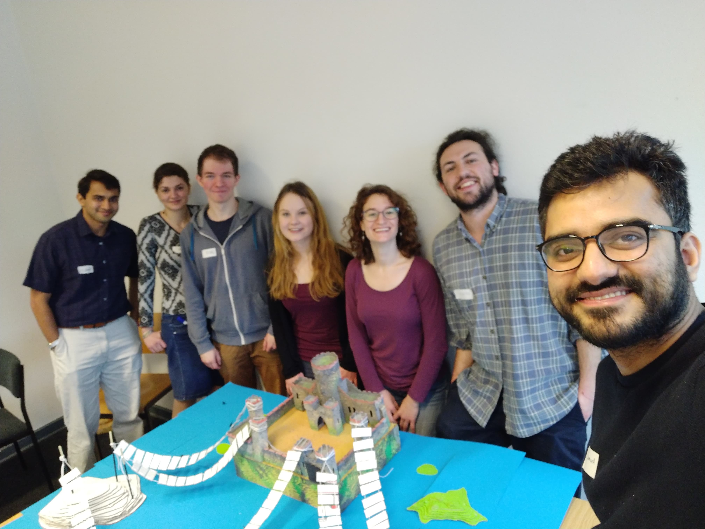
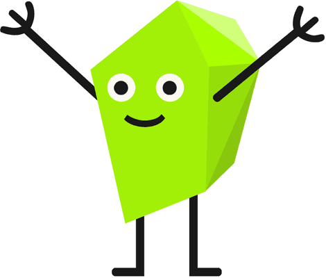

Mathematics should not be shut away in ivory towers! It has a vital role to play in society.
Here you will find a collection of activities that I have participated in, and great initiatives of friends,
addressing diversity and inclusiveness in the math community or/and showing off mathematics to the 'real' world.
June 22nd @ Alexanderplatz: this year's Soapbox Science!
I will talk about visualizing higher dimensions to anyone who will listen, come check it out!

Girls' Day is an initiative taking place yearly throughout Germany aimed at giving
schoolgirls a hands-on experience in traditionally male workplaces (and yes, there is a Boys' Day too!)
On the left is this year's team of volunteers with our own version of the Königsberg problem!

Check out my friend Anna's initiative to get people to know polytopes!
It's called Polytopia, and you can adopt your own polyhedron.
...and here is some math outreach in Italian:
My father writes books to make key mathematical concepts accessible to the lay (wo)man:
check them out here!
During my Bachelor and Master studies, I was part of
Made@DM,
a student group organizing workshops to bring mathematical reasoning to the general public.